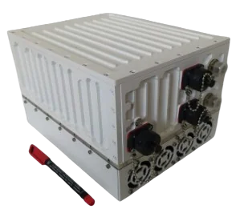
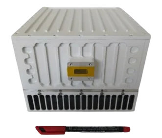
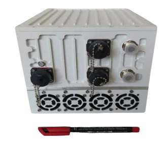

50W L-to-Ku Band Block Up Converter, GaN teknolojisi tabanlıdır. Yüksek verimli GaN solid-state tasarımı, uydu uplink uygulamalarında en yüksek performansı sunar.
GANSAT-50WKU
| RF Frekans | 13.75 – 14.50 GHz |
| Yerel Osilatör | 12.80 GHz |
| Çıkış Gücü | 50W (+47 dBm) |
| IF Konnektör | N-type or F-type |
| Güç Kaynağı | 220V 50Hz AC, 240W typ. |
| Çıkış Arayüzü | WR-75 G |
| Kazanç | 68 dB min, 72 dB nominal |
| IMD3 (Two Tones) | -26 dBc max. 2 signals 5 MHz apart at P-LINEAR |
| L.O. Leakage | -45 dBm max |
| Spurious | -50 dBc max |
| Spektral Büyüme | -30 dBc (QPSK at 1.5x and OQPSK at 1.0x symbol rate offset with 2dB back-off) |
| Dış Referans Gereksinimi | Via IF cable — 10 MHz (sine-wave), -5 to +5 dBm @ input port |
| TX Kazanç Varyasyonu / Sıcaklık Kararlılığı | ± 0.5 dB over 40 MHz / ± 1.8 dB over full band / ± 1.5 dB typ., ± 1.8 dB max. |
| Faz Gürültüsü | -55 dBc/Hz @ 10 Hz · -65 @ 100 Hz · -75 @ 1 kHz · -85 @ 10 kHz · -95 @ 100 kHz · -115 @ 1 MHz |
| Gürültü Güç Yoğunluğu TX / RX | -80 dBm/Hz (max) / -125 dBm/Hz (max) |
| Gürültü Faktörü | 15 dB max |
| Input / Output V.S.W.R. | 2:1 max |
| Mute | L.O. Kilit Kaybında SSPA Kapatma |
| Çalışma / Depolama Sıcaklığı | -40°C to +55°C / -55°C to +85°C |
| Boyutlar | 250 (L) × 200 (W) × 185 (H) mm — 9.85" × 7.8" × 7.3" |
| Ağırlık | 8 kg (17.6 lbs) max |
GANSAT-50WEXTKU
| RF Frekans | 13.75 – 14.75 GHz |
| Yerel Osilatör | 12.80 GHz |
| Çıkış Gücü | 50W (+47 dBm) |
| IF Konnektör | N-type or F-type |
| Güç Kaynağı | 220V 50Hz AC, 240W typ. |
| Çıkış Arayüzü | WR-75 G |
| Kazanç | 68 dB min, 72 dB nominal |
| IMD3 (Two Tones) | -26 dBc max. 2 signals 5 MHz apart at P-LINEAR |
| L.O. Leakage | -45 dBm max |
| Spurious | -50 dBc max |
| Spektral Büyüme | -30 dBc (QPSK at 1.5x and OQPSK at 1.0x symbol rate offset with 2dB back-off) |
| Dış Referans Gereksinimi | Via IF cable — 10 MHz (sine-wave), -5 to +5 dBm @ input port |
| TX Kazanç Varyasyonu / Sıcaklık Kararlılığı | ± 0.5 dB over 40 MHz / ± 1.8 dB over full band / ± 1.5 dB typ., ± 1.8 dB max. |
| Faz Gürültüsü | -55 dBc/Hz @ 10 Hz · -65 @ 100 Hz · -75 @ 1 kHz · -85 @ 10 kHz · -95 @ 100 kHz · -115 @ 1 MHz |
| Gürültü Güç Yoğunluğu TX / RX | -80 dBm/Hz (max) / -125 dBm/Hz (max) |
| Gürültü Faktörü | 15 dB max |
| Input / Output V.S.W.R. | 2:1 max |
| Mute | L.O. Kilit Kaybında SSPA Kapatma |
| Çalışma / Depolama Sıcaklığı | -40°C to +55°C / -55°C to +85°C |
| Boyutlar | 250 (L) × 200 (W) × 185 (H) mm — 9.85" × 7.8" × 7.3" |
| Ağırlık | 8 kg (17.6 lbs) max |
GANSAT-50WKU, 50W GaN çıkış gücüyle sabit ve yarı-kalıcı uydu uplink istasyonları için yüksek EIRP marjı sağlar. 220V AC besleme ve 8 kg ağırlığıyla hem zemin istasyonu konfigürasyonlarına hem de montajı kolay saha kurulumlarına uygundur.
Intelsat IESS-308/309 uyumlu faz gürültüsü ve IMD performansı, cihazın tüm büyük ticari Ku-Band uydu operatörleriyle uyumlu çalışmasını sağlar. GaN teknolojisi sayesinde sadece 240W güç tüketerek eşdeğer TWTA çözümlerine kıyasla çok daha verimli bir çalışma sunar.
50W Ku-Band BUC; VSAT hub istasyonları, teleport zemin istasyonları ve yayıncılık katkı bağlantıları için kullanılır. Daha düşük güçlü ünitelere kıyasla daha yüksek EIRP marjı sunarak küçük antenlerle bile güvenilir veri aktarımına olanak tanır.
GaN solid-state amplifikatörler; vakum tüpü gerektirmez, anında başlar (ısınma süresi yok), daha düşük faz gürültüsü ve geri çekilmede daha iyi doğrusallık sunar. GANSAT-50WKU, 50W RF çıkış için yalnızca 240W güç tüketir — eşdeğer TWTA çözümlerine göre belirgin biçimde daha verimlidir.
Standart KU (GANSAT-50WKU) 13,75–14,50 GHz aralığını kapsarken, Genişletilmiş KU (GANSAT-50WEXTKU) 13,75–14,75 GHz'e kadar çıkar. Genişletilmiş bant, tam Ku uplink tahsisini kullanan uydulara erişen operatörler için gereklidir.
Evet. GANSAT-50WKU, tüm Intelsat IESS-308/309 faz gürültüsü özelliklerini ve IMD3 gereksinimlerini karşılayarak dünya genelinde büyük ticari Ku-Band uydu transponderlerinde kullanıma uygunluğu garanti eder.